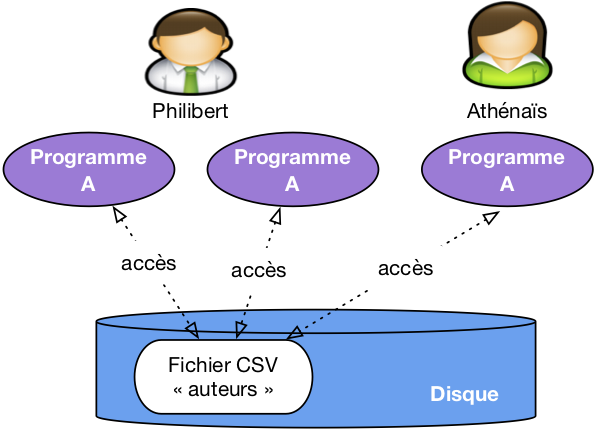
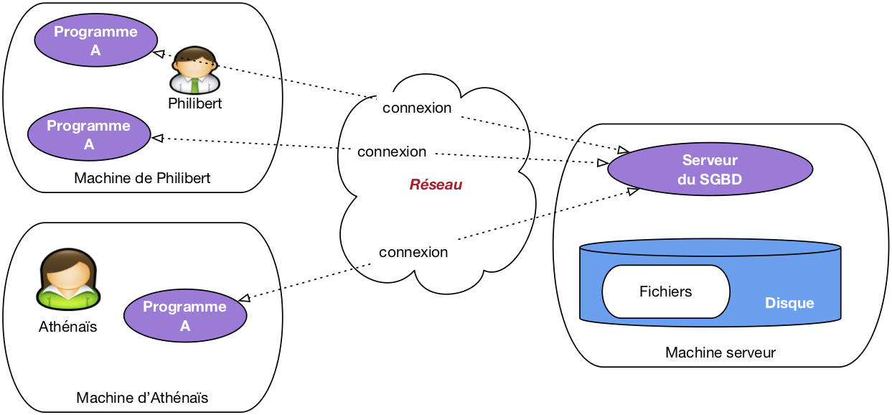

Programme Officiel
Contenus
|
Capacités attendues
|
Commentaires
|
|---|---|---|
| Modèle relationnel : relation, attribut, domaine, clef primaire, clef étrangère, schéma relationnel. | Identifier les concepts définissant le modèle relationnel. | Ces concepts permettent d’exprimer les contraintes d’intégrité (domaine, relation et référence). |
| Système de gestion de bases de données relationnelles. | Identifier les services rendus par un système de gestion de bases de données relationnelles : persistance des données, gestion des accès concurrents, efficacité de traitement des requêtes, sécurisation des accès. | Il s’agit de comprendre le rôle et les enjeux des différents services sans en détailler le fonctionnement. |
Les bases de données sont aujourd’hui incontournables, car très peu d’informations restent encore stockées sur du papier. Nous avons vu en première comment utiliser des données comme celle d’un tableur avec notamment l’utilisation du format
csv. Cependant l’utilisation de simples tableaux a ses limites et c’est pour cela que l’on utilise les bases de données relationnelles qui ont été formalisées en 1970 par Edgar F.Codd qui recevra le prix Turing en 1981 pour son travail.
Définition
- Base de données
-
En informatique, une base de données est une collection organisée de données stockées et consultées électroniquement.
Il existe divers modèles de bases de données:
- Les bases données relationnelles utilisent des tableaux de données organisés en lignes et colonnes auxquelles on accède grâce au langage
SQL. - Les bases de données non relationnelles dites
noSQLqui peuvent stocker des données de formes diverses graphes, documents…
Cette année, nous nous intéresserons uniquement aux bases de données relationnelles et au langage SQL dont on peut voir ci-dessous un exemple de requête et de résultats sur une base de données de location de DVD.
Motivations
Tout d’abord l’utilisation de fichiers csv pose des problèmes d’accès aux données dans le cas des accès concurrentiels:
- Tous les utilisateurs doivent charger le fichier pour l’utiliser.
- Que faire si plusieurs utilisateurs modifient en même temps le fichier?
Image CC-BY-NC-SA Philippe Rigaux sur sql.dbpedia.fr
D’autre part, l’organisation même des données au sein d’un seul tableau n’est pas optimale.
Prenons l’exemple d’un tableau donnant les récompenses aux oscars. wikdata.org
| humanLabel | awardEditionLabel | awardLabel | awardWorkLabel | directorLabel | time |
|---|---|---|---|---|---|
| Bong Joon-ho | 92e cérémonie des Oscars | Oscar du meilleur réalisateur | Parasite | Bong Joon-ho | 2020-02-09T00:00:00Z |
| Brad Pitt | 92e cérémonie des Oscars | Oscar du meilleur acteur dans un second rôle | Once Upon a Time in… Hollywood | Quentin Tarantino | 2020-02-09T00:00:00Z |
| Guillaume Rocheron | 92e cérémonie des Oscars | Oscar des meilleurs effets visuels | 1917 | Sam Mendes | 2020-02-09T00:00:00Z |
| Joaquin Phoenix | 92e cérémonie des Oscars | Oscar du meilleur acteur | Joker | Todd Phillips | 2020-02-09T00:00:00Z |
| Julia Reichert | 92e cérémonie des Oscars | Oscar du meilleur film documentaire | American Factory | Julia Reichert | 2020-02-09T00:00:00Z |
| Laura Dern | 92e cérémonie des Oscars | Oscar de la meilleure actrice dans un second rôle | Marriage Story | Noah Baumbach | 2020-02-09T00:00:00Z |
| Renée Zellweger | 92e cérémonie des Oscars | Oscar de la meilleure actrice | Judy | Rupert Goold | 2020-02-09T00:00:00Z |
| Olivia Colman | 91e cérémonie des Oscars | Oscar de la meilleure actrice | The Favourite | Yórgos Lánthimos | 2019-02-24T00:00:00Z |
| Rami Malek | 91e cérémonie des Oscars | Oscar du meilleur acteur | Bohemian Rhapsody | Bryan Singer | 2019-02-24T00:00:00Z |
| Ruth E. Carter | 91e cérémonie des Oscars | Oscar de la meilleure création de costumes | Black Panther | Ryan Coogler | 2019-02-24T00:00:00Z |
| Alexandre Desplat | 90e cérémonie des Oscars | Oscar de la meilleure musique de film | La Forme de l’eau | Guillermo del Toro | 2018-03-04T00:00:00Z |
| Allison Janney | 90e cérémonie des Oscars | Oscar de la meilleure actrice dans un second rôle | Moi, Tonya | Craig Gillespie | 2018-03-04T00:00:00Z |
| Frances McDormand | 90e cérémonie des Oscars | Oscar de la meilleure actrice | Trois Billboards : Les Panneaux de la vengeance | Martin McDonagh | 2018-03-04T00:00:00Z |
| Frank Stiefel | 90e cérémonie des Oscars | Oscar du meilleur court métrage documentaire | Heaven Is a Traffic Jam on the 405 | Frank Stiefel | 2018-03-04T00:00:00Z |
| Gary Oldman | 90e cérémonie des Oscars | Oscar du meilleur acteur | Les Heures sombres | Joe Wright | 2018-03-04T00:00:00Z |
| Gregg Landaker | 90e cérémonie des Oscars | Oscar du meilleur mixage de son | Dunkerque | Christopher Nolan | 2018-03-04T00:00:00Z |
| Guillermo del Toro | 90e cérémonie des Oscars | Oscar du meilleur réalisateur | La Forme de l’eau | Guillermo del Toro | 2018-03-04T00:00:00Z |
| James Ivory | 90e cérémonie des Oscars | Oscar du meilleur scénario adapté | Call Me by Your Name | Luca Guadagnino | 2018-03-04T00:00:00Z |
| Jordan Peele | 90e cérémonie des Oscars | Oscar du meilleur scénario original | Get Out | Jordan Peele | 2018-03-04T00:00:00Z |
| Lee Smith | 90e cérémonie des Oscars | Oscar du meilleur montage | Dunkerque | Christopher Nolan | 2018-03-04T00:00:00Z |
| Lucy Sibbick | 90e cérémonie des Oscars | Oscar du meilleur maquillage | Les Heures sombres | Joe Wright | 2018-03-04T00:00:00Z |
| Mark Bridges | 90e cérémonie des Oscars | Oscar de la meilleure création de costumes | Phantom Thread | Paul Thomas Anderson | 2018-03-04T00:00:00Z |
| Richard King | 90e cérémonie des Oscars | Oscar du meilleur montage de son | Dunkerque | Christopher Nolan | 2018-03-04T00:00:00Z |
| Richard R. Hoover | 90e cérémonie des Oscars | Oscar des meilleurs effets visuels | Blade Runner 2049 | Denis Villeneuve | 2018-03-04T00:00:00Z |
| Roger Deakins | 90e cérémonie des Oscars | Oscar de la meilleure photographie | Blade Runner 2049 | Denis Villeneuve | 2018-03-04T00:00:00Z |
| Sam Rockwell | 90e cérémonie des Oscars | Oscar du meilleur acteur dans un second rôle | Trois Billboards : Les Panneaux de la vengeance | Martin McDonagh | 2018-03-04T00:00:00Z |
| Adam Valdez | 89e cérémonie des Oscars | Oscar des meilleurs effets visuels | Le Livre de la jungle | Jon Favreau | 2017-02-26T00:00:00Z |
| Anna Udvardy | 89e cérémonie des Oscars | Oscar du meilleur court métrage de fiction | Sing | Kristóf Deák | 2017-02-26T00:00:00Z |
| Barry Jenkins | 89e cérémonie des Oscars | Oscar du meilleur scénario adapté | Moonlight | Barry Jenkins | 2017-02-26T00:00:00Z |
| Casey Affleck | 89e cérémonie des Oscars | Oscar du meilleur acteur | Manchester by the Sea | Kenneth Lonergan | 2017-02-26T00:00:00Z |
| Clark Spencer | 89e cérémonie des Oscars | Oscar du meilleur film d’animation | Zootopie | Byron Howard | 2017-02-26T00:00:00Z |
| Colleen Atwood | 89e cérémonie des Oscars | Oscar de la meilleure création de costumes | Les Animaux fantastiques | David Yates | 2017-02-26T00:00:00Z |
| Damien Chazelle | 89e cérémonie des Oscars | Oscar du meilleur réalisateur | La La Land | Damien Chazelle | 2017-02-26T00:00:00Z |
| Emma Stone | 89e cérémonie des Oscars | Oscar de la meilleure actrice | La La Land | Damien Chazelle | 2017-02-26T00:00:00Z |
| Jeremy Kleiner | 89e cérémonie des Oscars | Oscar du meilleur film | Moonlight | Barry Jenkins | 2017-02-26T00:00:00Z |
| John Gilbert | 89e cérémonie des Oscars | Oscar du meilleur montage | Tu ne tueras point | Mel Gibson | 2017-02-26T00:00:00Z |
| Justin Hurwitz | 89e cérémonie des Oscars | Oscar de la meilleure musique de film | La La Land | Damien Chazelle | 2017-02-26T00:00:00Z |
| Kenneth Lonergan | 89e cérémonie des Oscars | Oscar du meilleur scénario original | Manchester by the Sea | Kenneth Lonergan | 2017-02-26T00:00:00Z |
| Linus Sandgren | 89e cérémonie des Oscars | Oscar de la meilleure photographie | La La Land | Damien Chazelle | 2017-02-26T00:00:00Z |
| Mahershalalhashbaz Ali | 89e cérémonie des Oscars | Oscar du meilleur acteur dans un second rôle | Moonlight | Barry Jenkins | 2017-02-26T00:00:00Z |
| Robert Mackenzie | 89e cérémonie des Oscars | Oscar du meilleur mixage de son | Tu ne tueras point | Mel Gibson | 2017-02-26T00:00:00Z |
| Sylvain Bellemare | 89e cérémonie des Oscars | Oscar du meilleur montage de son | Premier Contact | Denis Villeneuve | 2017-02-26T00:00:00Z |
| Viola Davis | 89e cérémonie des Oscars | Oscar de la meilleure actrice dans un second rôle | Fences | Denzel Washington | 2017-02-26T00:00:00Z |
| Alejandro González Iñárritu | 88e cérémonie des Oscars | Oscar du meilleur réalisateur | The Revenant | Alejandro González Iñárritu | 2016-02-28T00:00:00Z |
| Alicia Vikander | 88e cérémonie des Oscars | Oscar de la meilleure actrice dans un second rôle | The Danish Girl | Tom Hooper | 2016-02-28T00:00:00Z |
| Benjamin Cleary | 88e cérémonie des Oscars | Oscar du meilleur court métrage de fiction | Stutterer | Benjamin Cleary | 2016-02-28T00:00:00Z |
| Brie Larson | 88e cérémonie des Oscars | Oscar de la meilleure actrice | Room | Lenny Abrahamson | 2016-02-28T00:00:00Z |
| Charles Randolph | 88e cérémonie des Oscars | Oscar du meilleur scénario adapté | The Big Short | Adam McKay | 2016-02-28T00:00:00Z |
| Damian Martin | 88e cérémonie des Oscars | Oscar du meilleur maquillage | Mad Max: Fury Road | George Miller | 2016-02-28T00:00:00Z |
| David White | 88e cérémonie des Oscars | Oscar du meilleur montage de son | Mad Max: Fury Road | George Miller | 2016-02-28T00:00:00Z |
| Emmanuel Lubezki | 88e cérémonie des Oscars | Oscar de la meilleure photographie | The Revenant | Alejandro González Iñárritu | 2016-02-28T00:00:00Z |
| Ennio Morricone | 88e cérémonie des Oscars | Oscar de la meilleure musique de film | The Hateful Eight | Quentin Tarantino | 2016-02-28T00:00:00Z |
| Gregg Rudloff | 88e cérémonie des Oscars | Oscar du meilleur mixage de son | Mad Max: Fury Road | George Miller | 2016-02-28T00:00:00Z |
| James Gay-Rees | 88e cérémonie des Oscars | Oscar du meilleur film documentaire | Amy | Asif Kapadia | 2016-02-28T00:00:00Z |
| Jenny Beavan | 88e cérémonie des Oscars | Oscar de la meilleure création de costumes | Mad Max: Fury Road | George Miller | 2016-02-28T00:00:00Z |
| Jonas Rivera | 88e cérémonie des Oscars | Oscar du meilleur film d’animation | Vice-Versa | Pete Docter | 2016-02-28T00:00:00Z |
| Josh Singer | 88e cérémonie des Oscars | Oscar du meilleur scénario original | Spotlight | Tom McCarthy | 2016-02-28T00:00:00Z |
| Leonardo DiCaprio | 88e cérémonie des Oscars | Oscar du meilleur acteur | The Revenant | Alejandro González Iñárritu | 2016-02-28T00:00:00Z |
| Lisa Thompson | 88e cérémonie des Oscars | Oscar de la meilleure direction artistique | Mad Max: Fury Road | George Miller | 2016-02-28T00:00:00Z |
| Margaret Sixel | 88e cérémonie des Oscars | Oscar du meilleur montage | Mad Max: Fury Road | George Miller | 2016-02-28T00:00:00Z |
| Mark Rylance | 88e cérémonie des Oscars | Oscar du meilleur acteur dans un second rôle | Le pont des espions | Steven Spielberg | 2016-02-28T00:00:00Z |
| Mark Williams Ardington | 88e cérémonie des Oscars | Oscar des meilleurs effets visuels | Ex Machina | Alex Garland | 2016-02-28T00:00:00Z |
| Pato Escala Pierart | 88e cérémonie des Oscars | Oscar du meilleur court métrage d’animation | Historia de un oso | Gabriel Osorio Vargas | 2016-02-28T00:00:00Z |
| Sharmeen Obaid-Chinoy | 88e cérémonie des Oscars | Oscar du meilleur court métrage documentaire | A Girl in the River: The Price of Forgiveness | Sharmeen Obaid-Chinoy | 2016-02-28T00:00:00Z |
| Steve Golin | 88e cérémonie des Oscars | Oscar du meilleur film | Spotlight | Tom McCarthy | 2016-02-28T00:00:00Z |
| Adam Stockhausen | 87e cérémonie des Oscars | Oscar de la meilleure direction artistique | The Grand Budapest Hotel | Wes Anderson | 2015-02-22T00:00:00Z |
| Alan Robert Murray | 87e cérémonie des Oscars | Oscar du meilleur montage de son | American Sniper | Clint Eastwood | 2015-02-22T00:00:00Z |
| Alejandro González Iñárritu | 87e cérémonie des Oscars | Oscar du meilleur réalisateur | Birdman | Alejandro González Iñárritu | 2015-02-22T00:00:00Z |
| Alexander Dinelaris Jr. | 87e cérémonie des Oscars | Oscar du meilleur scénario original | Birdman | Alejandro González Iñárritu | 2015-02-22T00:00:00Z |
| Alexandre Desplat | 87e cérémonie des Oscars | Oscar de la meilleure musique de film | The Grand Budapest Hotel | Wes Anderson | 2015-02-22T00:00:00Z |
| Craig Mann | 87e cérémonie des Oscars | Oscar du meilleur mixage de son | Whiplash | Damien Chazelle | 2015-02-22T00:00:00Z |
| Eddie Redmayne | 87e cérémonie des Oscars | Oscar du meilleur acteur | Une merveilleuse histoire du temps | James Marsh | 2015-02-22T00:00:00Z |
| Ellen Goosenberg Kent | 87e cérémonie des Oscars | Oscar du meilleur court métrage documentaire | Crisis Hotline: Veterans Press 1 | Ellen Goosenberg Kent | 2015-02-22T00:00:00Z |
| Emmanuel Lubezki | 87e cérémonie des Oscars | Oscar de la meilleure photographie | Birdman | Alejandro González Iñárritu | 2015-02-22T00:00:00Z |
| Graham Moore | 87e cérémonie des Oscars | Oscar du meilleur scénario adapté | Imitation Game | Morten Tyldum | 2015-02-22T00:00:00Z |
| Ian Hunter | 87e cérémonie des Oscars | Oscar des meilleurs effets visuels | Interstellar | Christopher Nolan | 2015-02-22T00:00:00Z |
| J. K. Simmons | 87e cérémonie des Oscars | Oscar du meilleur acteur dans un second rôle | Whiplash | Damien Chazelle | 2015-02-22T00:00:00Z |
| James Lucas | 87e cérémonie des Oscars | Oscar du meilleur court métrage de fiction | The Phone Call | Mat Kirkby | 2015-02-22T00:00:00Z |
| John Lesher | 87e cérémonie des Oscars | Oscar du meilleur film | Birdman | Alejandro González Iñárritu | 2015-02-22T00:00:00Z |
| Julianne Moore | 87e cérémonie des Oscars | Oscar de la meilleure actrice | Still Alice | Wash Westmoreland | 2015-02-22T00:00:00Z |
| Kristina Reed | 87e cérémonie des Oscars | Oscar du meilleur court métrage d’animation | Feast | Patrick Osborne | 2015-02-22T00:00:00Z |
| Mark Coulier | 87e cérémonie des Oscars | Oscar du meilleur maquillage | The Grand Budapest Hotel | Wes Anderson | 2015-02-22T00:00:00Z |
| Milena Canonero | 87e cérémonie des Oscars | Oscar de la meilleure création de costumes | The Grand Budapest Hotel | Wes Anderson | 2015-02-22T00:00:00Z |
| Patricia Arquette | 87e cérémonie des Oscars | Oscar de la meilleure actrice dans un second rôle | Boyhood | Richard Linklater | 2015-02-22T00:00:00Z |
| Roy Conli | 87e cérémonie des Oscars | Oscar du meilleur film d’animation | Big Hero 6 | Chris Williams | 2015-02-22T00:00:00Z |
| Tom Cross | 87e cérémonie des Oscars | Oscar du meilleur montage | Whiplash | Damien Chazelle | 2015-02-22T00:00:00Z |
| Alexandre Espigares | 86e cérémonie des Oscars | Oscar du meilleur court métrage d’animation | Mr Hublot | Laurent Witz | 2014-03-02T00:00:00Z |
| Alfonso Cuarón | 86e cérémonie des Oscars | Oscar du meilleur réalisateur | Gravity | Alfonso Cuarón | 2014-03-02T00:00:00Z |
| Anders Walter | 86e cérémonie des Oscars | Oscar du meilleur court métrage de fiction | Helium | Kim Magnusson | 2014-03-02T00:00:00Z |
| Beverley Dunn | 86e cérémonie des Oscars | Oscar de la meilleure direction artistique | Gatsby le Magnifique | Baz Luhrmann | 2014-03-02T00:00:00Z |
| Cate Blanchett | 86e cérémonie des Oscars | Oscar de la meilleure actrice | Blue Jasmine | Woody Allen | 2014-03-02T00:00:00Z |
| Catherine Martin | 86e cérémonie des Oscars | Oscar de la meilleure création de costumes | Gatsby le Magnifique | Baz Luhrmann | 2014-03-02T00:00:00Z |
| Chris Lawrence | 86e cérémonie des Oscars | Oscar des meilleurs effets visuels | Gravity | Alfonso Cuarón | 2014-03-02T00:00:00Z |
| Emmanuel Lubezki | 86e cérémonie des Oscars | Oscar de la meilleure photographie | Gravity | Alfonso Cuarón | 2014-03-02T00:00:00Z |
| Glenn Freemantle | 86e cérémonie des Oscars | Oscar du meilleur montage de son | Gravity | Alfonso Cuarón | 2014-03-02T00:00:00Z |
| Jared Leto | 86e cérémonie des Oscars | Oscar du meilleur acteur dans un second rôle | The Dallas Buyers Club | Jean-Marc Vallée | 2014-03-02T00:00:00Z |
| Jeremy Kleiner | 86e cérémonie des Oscars | Oscar du meilleur film | Twelve Years a Slave | Steve McQueen | 2014-03-02T00:00:00Z |
| John Ridley | 86e cérémonie des Oscars | Oscar du meilleur scénario adapté | Twelve Years a Slave | Steve McQueen | 2014-03-02T00:00:00Z |
| Lupita Nyong’o | 86e cérémonie des Oscars | Oscar de la meilleure actrice dans un second rôle | Twelve Years a Slave | Steve McQueen | 2014-03-02T00:00:00Z |
| Malcolm Clarke | 86e cérémonie des Oscars | Oscar du meilleur court métrage documentaire | La Dame du 6 | Malcolm Clarke | 2014-03-02T00:00:00Z |
| Mark Sanger | 86e cérémonie des Oscars | Oscar du meilleur montage | Gravity | Alfonso Cuarón | 2014-03-02T00:00:00Z |
| Matthew McConaughey | 86e cérémonie des Oscars | Oscar du meilleur acteur | The Dallas Buyers Club | Jean-Marc Vallée | 2014-03-02T00:00:00Z |
| Niv Adiri | 86e cérémonie des Oscars | Oscar du meilleur mixage de son | Gravity | Alfonso Cuarón | 2014-03-02T00:00:00Z |
| Peter Del Vecho | 86e cérémonie des Oscars | Oscar du meilleur film d’animation | La Reine des neiges | Chris Buck | 2014-03-02T00:00:00Z |
| Robin Mathews | 86e cérémonie des Oscars | Oscar du meilleur maquillage | The Dallas Buyers Club | Jean-Marc Vallée | 2014-03-02T00:00:00Z |
| Spike Jonze | 86e cérémonie des Oscars | Oscar du meilleur scénario original | Her | Spike Jonze | 2014-03-02T00:00:00Z |
| Steven Price | 86e cérémonie des Oscars | Oscar de la meilleure musique de film | Gravity | Alfonso Cuarón | 2014-03-02T00:00:00Z |
| Christoph Waltz | 85e cérémonie des Oscars | Oscar du meilleur acteur dans un second rôle | Django Unchained | Quentin Tarantino | 2013-02-24T00:00:00Z |
| Mark Andrews | 85e cérémonie des Oscars | Oscar du meilleur film d’animation | Rebelle | Brenda Chapman | 2013-02-24T00:00:00Z |
| Quentin Tarantino | 85e cérémonie des Oscars | Oscar du meilleur scénario original | Django Unchained | Quentin Tarantino | 2013-02-24T00:00:00Z |
Vous voyez déjà sur cet extrait que certaines données sont redondantes comme les dates des cérémonies, les noms des réalisateurs de films.
Si on doit modifier une information sur un acteur on doit le faire sur toute la table, et pas seulement à un endroit.
On le voit bien, il serait préférable de stocker les informations sur les films, les acteurs les cérémonies séparément, puis établir des liens entre elles pour éviter toutes ces redondances. C’est pourquoi on parle de base de données relationnelles.
Modèle relationnel
Dans une base de données, plutôt que de stocker toutes les données dans une table, on les stocke dans plusieurs tables reliées entre elles par des clés.
Une base de données est définie par son schéma relationnel qui spécifie:
La liste des tables avec pour chaque table:
- Le nom de la table(relation).
- La liste des colonnes(attributs) avec leur nom et le domaine de valeurs des données qui y sont stockées(Chaînes de caractères, entiers, dates…).
- Les identifiants (uniques) de chaque ligne.

Les tables doivent être reliées entre elles grâce à des identifiants secondaires.

By Puerto01 at French Wikipedia, CC BY 2.5, Link


Système de gestion de base de données: SGBD *
Cette partie ne pourra pas faire l’objet d’une évaluation lors de l’épreuve terminale écrite et pratique de l’enseignement de spécialité. BO MENE2121274N
Comme nous l’avons vu l’utilisation d’un modèle relationnel, permet d’éviter des redondances dans les données ce qui permet d’économiser de la place, mais aussi de ne garder qu’une seule source de vérité et éviter par exemple les noms orthographiés de plusieurs façons différentes.
Mais ce n’est pas tout, la base de données est gérée par un programme appelé système de gestion de base de données(SGBD).
Image CC-BY-NC-SA Philippe Rigaux sur sql.dbpedia.fr
Le SGBD veille à ce que les données dans la table restent conformes au schéma qui la définit, mais aussi:
- La gestion des accès concurrents: que faire si deux personnes accèdent et modifient en me temps la base de données?
- Efficacité de traitement des requêtes: les bases de données pouvant être très volumineuse(jusqu’au pétaoctet), il faut pouvoir rechercher dedans efficacement.
- Sécurisation des accès: qui a le droit de lire, d’écrire dans la base de données.
Propriétés ACID
En informatique, les propriétés ACID (atomicité, cohérence, isolation et durabilité) sont un ensemble de propriétés qui garantissent qu’une transaction informatique est exécutée de façon fiable.
Jim Gray a défini les propriétés qui garantissent des transactions fiables à la fin des années 1970 et a développé des technologies pour les mettre en œuvre automatiquement.